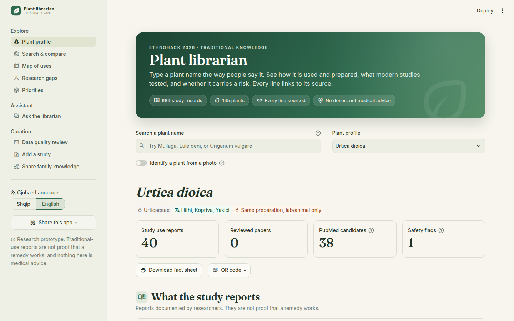
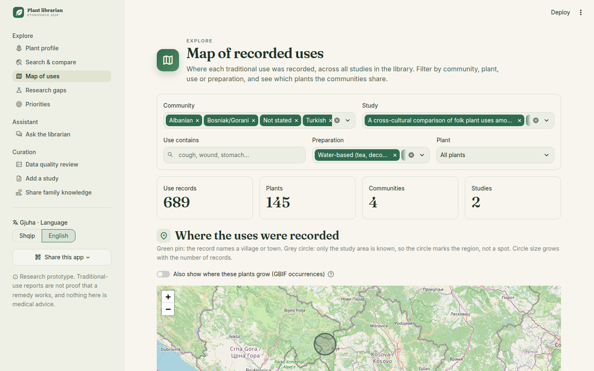
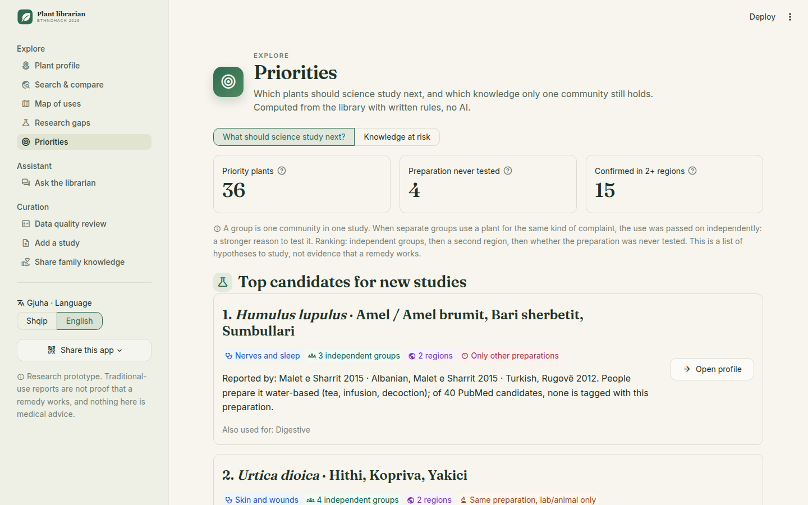
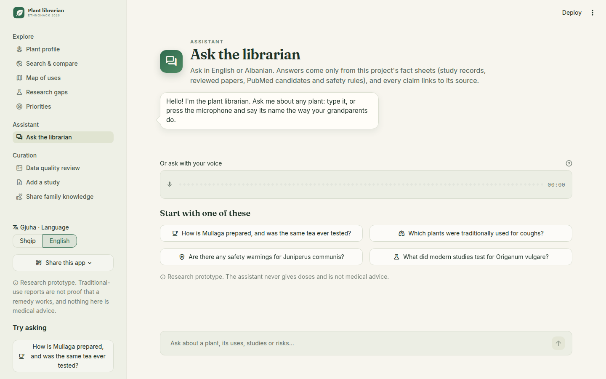

Traditional plant knowledge from Kosovo and Albania, read from the studies, checked against modern science, and every line linked to its source.
“Was the tea my grandmother drinks ever tested?”
Answering this today takes a student days: find the studies, decode the dialect name, search PubMed plant by plant, and check every paper's preparation.
Reading studies, transcribing voice, answering questions from our own fact sheets.
Safety flags, evidence verdicts, priorities and knowledge-at-risk come from written rules and open databases, never from an AI guess.

Hithi → Urtica dioica (nettle), used by Albanian, Bosniak/Gorani and Turkish families.
569 records, 108 plants. Parsed from the study's table without AI. CC BY 4.0.
120 records, 88 plants. Extracted with the free Groq LLM. CC BY 2.0.

| Same preparation, tagged as a human study | 23 |
| Same preparation, lab or animal only | 71 |
| Only other preparations tested | 14 |
| No studies found | 3 |
| Manually reviewed | 3 |
| Not comparable by keywords | 31 |
Keyword screening of PubMed candidates: a pointer to what to read next, not a systematic review.
Albanian and Turkish families in Sharr and Albanians in Rugovë drink it as a tea to relax and sleep.
Of 40 PubMed papers, none tests the tea: essential oils, alcohol extracts, isolated compounds.
A concrete question a pharmacy student can take on.

Plants used for the same complaint by 2+ independent groups, whose preparation was never tested in people. 15 confirmed in both regions. #1: hop, for nerves and sleep.
73 plants and 119 uses are reported by one group only. If that group stops passing them on, nothing else records them.
18 plants are used by all three Sharr communities: nettle, chamomile, elder, linden, juniper…
An extracted row is dropped if its quote is not on the cited page. The 12 failing records are flagged for a human to fix.
Records stay “Needs review” until a named person verifies them. A machine check never counts as a human one.
65 tests and CI. API responses are cached: one command rebuilds the whole library offline.

Built only on free services: Groq, GBIF, PubMed, Wikidata, Pl@ntNet, Streamlit Cloud.
Traditional use is not proof that a remedy works. This is a research prototype, not medical advice.